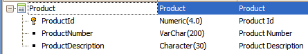
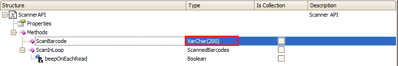
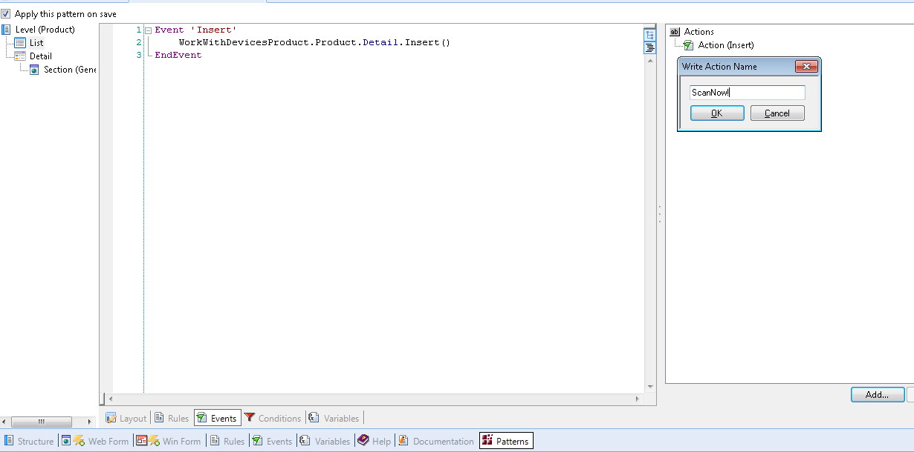
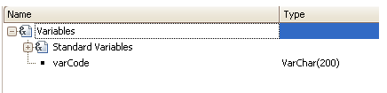

This article is a short guide to show how to configure and use this method.
In this example you will use the following Transaction object, with the Work With for Smart Devices object (WWSD) applied:

As you can see the ScanBarCode method returns a variable of VarChar(200). The name of the variable is ScanBarcode.

Add the action to de WWSD:

After scanning the barcode you want to use that value.
You can call a Procedure object in a composite action which uses that information. (This is one way to use the information obtained, there are many ways to use it).
The procedure you are going to use is the following:
For Each
where ProductId = &ProductId
ProductNumber = &ScanBarcode
EndFor
And the following rules:
parm(&ProductId, &ScanBarcode);
You have to make a composite action that will first scan the barcode, get the value scanned, and send it to a procedure to use that value.
The ScanBarcode method returns the value scanned. This value is return in a VarChar(200), so you have to have a variable in our WWSD to save this value.
The variable is as shown bellow:

The event with composite action:
Event 'ScanNow!'
Composite
&VarCode = Scanner.ScanBarcode()
Proc.Call(&varCode, ProductId)
EndComposite
EndEvent
Done. When scanning a code it will call the procedure to save the number in the attribute ProductNumber of the Transaction.
| Backlinks |
| Scanner external object |